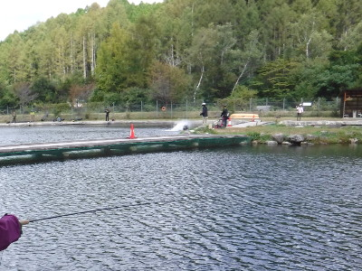
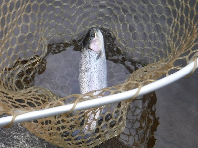

釣行日誌 故郷編
2017/10/01 平谷湖釣行 秋の訪れ
今朝は６時半に起きた。ゆっくり朝食を摂り、釣り道具の支度をする。８時半に自宅を出て、予定では平谷湖まで２時間半のドライブである。途中、鮮やかな赤も少し盛りを過ぎた感のある彼岸花の群生を眺めながら、山間部のワインディングロードを走って行く。しかし、本当にカーブが多く、山あいの小さな町で生まれ育った私でも、いささかゲンナリしてくる。
平谷湖の駐車場に着くと、天気も良い１０月最初の休日とあって、なんと満車である。なんとか隅っこの空き地に停めて、釣り具一式を持って受付に向かう。午後券の発券はまだ、とのことだったので、テラスのテーブルでお弁当にした。見晴らしの良いテーブルからは、５つに区切られたエリアの全体が良く見える。
明太子、焼き鮭、おかかなどのお握りをパクつきながら眺めていると、ルアー・フライともに、釣り人の人気は第１・第２エリアに集中しているようであった。キャッチ＆リリース専用のエキスパートエリアには、あまり人が居ない。ルアー・フライ共に良く釣れているようで、あちこちでロッドが曲がっている。
お腹もふくれて、１２時近くなったので、受付へ行き、レギュレーションの同意書兼メンバーズカードに署名をして、午後券を購入した。さて！ と意気込んで水辺へ降りて行ったが、なかなかの混雑で、竿を出せそうな所があまりない。
左手奥のスペースがあることを確認して、第１エリア山側の、桟橋のたもとあたりに店を広げ、商売を始める。
さて！ 今日のテーマは、いささかさび付いたフライキャスティングの勘を取り戻すことと、新たな秘密兵器：ハズキルーペ！ の性能と使い勝手を確認することである。（笑）
来るべき１１月下旬からのニュージーランド再訪に備えて、本番用のパックロッドは温存してあるので、今日使うロッドはなんと２５年ぶりくらいに出してきたＵＦＭの６番２ピースである。その昔、名古屋でサラリーマンをしていた頃に、中津川のひょうたん湖で活躍した往年の名ロッド？である。リールをセットしたのはいいのだが、２つの交換用スプールにＮＺ向けの暗緑色のフライライン：コートランドの 444 Classic Spring Creek - Olive、６番と４番のＷＦが巻いてあり、どちらかわからなくなってしまったので、山勘で太そうな方のラインを選んだ。
先日購入したばかりのハズキルーペに眼鏡用ストラップを付け、首に掛ける。ルーペ越しに手元を見ると、おお！実に大きく見える！ これなら良さそうだ。ティペットは４Ｘ、インジケーターは、オレンジ色の大きくて目立つヤツを付けた。フライは先週イシグロで買って来た管理釣り場用のビーズヘッドマラブーである。サイズは14番くらいだろうか？ ペンチでバーブを潰してから結ぶ。フックのアイがとても大きく見えて楽なことこの上ない。しかし当然ながら遠くはまったく見えないので、偏光グラスに掛け替える必要がある。これは面倒だが、仕方がない。
フライフィッシングを主題とした名作映画、「リバー・ランズ・スルー・イット」のエンディングで、老いた主人公が苦労しながらフライを結ぶシーンがあるが、自分ももうそんな歳になったのだなぁと、様々な想いが胸に浮かぶ。

さて、背後の立木に引っかけないよう注意して振り込む。よく目立つオレンジ色のマーカーが水面に浮かび、緊張と興奮の時間が始まる。マーカー以上に目立っているのは、水中を泳いでいる大型のアルビノである。あれが釣れないかなぁ.....と夢想してみる。アルビノの他にも、黒褐色の魚影が実にたくさん泳いでいる。魚影は濃いようだ。
水面のマーカーにピクリと反応が現れ、スッと沈んだ。合わせると、クンクンという手応えと共に可愛いサイズのレインボートラウトが上がってきた。６番ロッドでは、いささか可哀想になってくるが、今日はキャスティングの練習も兼ねているので、ネットに入れてフックを外してやった。

あまり遠投しなくても、至る所に魚は居るので、ロールキャストの練習も行う。ニュージーランド南島西海岸の名ガイド、ディーン・トロレイ君ほど上手くはできないが、なんとかマーカーとニンフを前へ送り込む。
その後、数尾を快調に釣ったが、にわかに空が曇り出し、寒い風が吹くようになった。デイパックから雨具を出して着込んだのだが、高原の風は冷たく、依然寒気は続く。フリースジャケットを持って来なかったのがドジだった。これは風邪を引き込んだらイカンと思い、まだまだ午後券の時間は残っていたが、後ろ髪を引かれつつ釣り場を後にした。
車に釣り具を仕舞い、毎日の日課である３０分のウォーキングをするために、駐車場横の林道を奥に向かって歩くことにした。しばらく進むと、小さな沢に架かった橋がある。下を覗き込むと、なかなか良い渓相である。またしばらく歩むと、長い淵の尻に出た。ひょいと顔を出すと、魚影が２つ走り、上流へ消えた。
『おっ！ 居ますねぇ....』
と、久しぶりに見る野性の魚影に嬉しくなりつつ、そっと淵の流れ込みを覗いてみる。水中にパーマークの鮮やかな魚体が見えた。アマゴだ。それほど大きくは無いが、実に美しい。
思い起こせば、１０歳の春に、故郷にあるこのぐらいの小さな沢で初めてアマゴを釣り上げてから、この道にどっぷりと浸かり、はや４５年が過ぎたことになる。
「一生幸福でいたかったら、釣りを覚えなさい。」
とは、開高健の著作であまりにも有名になった中国の古諺であるが、人生の峠をすでに越えたかもしれない、実に幸せな私の半生だった。来シーズンは、叔父のルアーに付き合いながら、フライも楽しんでみようかと、心中密かに決意を固めた。
帰途は、カーブの多い区間をショートカットし、勝手知ったる実家経由のルートを選んだ。スタンドでガソリンを入れて距離計を見ると、わずか 216km しか走っていないことに愕然とした。あれしきのキャストで肩がこり、けっこう疲れた感があったが、いよいよトシかなぁと再確認させられた秋の夜であった。
釣行日誌 故郷編 目次へ
サイトマップ
ホームへ
お問い合わせ